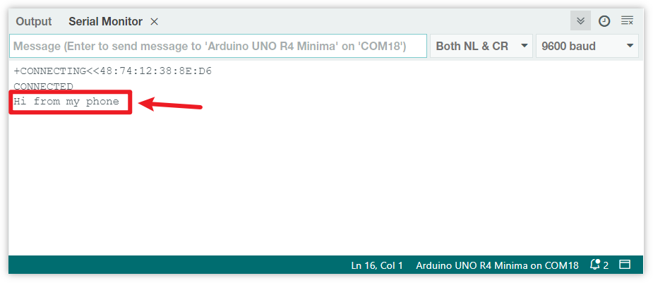

Bemerkung
Hallo und willkommen in der SunFounder Raspberry Pi & Arduino & ESP32 Enthusiasten-Gemeinschaft auf Facebook! Tauchen Sie tiefer ein in die Welt von Raspberry Pi, Arduino und ESP32 mit anderen Enthusiasten.
Warum beitreten?
Expertenunterstützung: Lösen Sie Nachverkaufsprobleme und technische Herausforderungen mit Hilfe unserer Gemeinschaft und unseres Teams.
Lernen & Teilen: Tauschen Sie Tipps und Anleitungen aus, um Ihre Fähigkeiten zu verbessern.
Exklusive Vorschauen: Erhalten Sie frühzeitigen Zugang zu neuen Produktankündigungen und exklusiven Einblicken.
Spezialrabatte: Genießen Sie exklusive Rabatte auf unsere neuesten Produkte.
Festliche Aktionen und Gewinnspiele: Nehmen Sie an Gewinnspielen und Feiertagsaktionen teil.
👉 Sind Sie bereit, mit uns zu erkunden und zu erschaffen? Klicken Sie auf [hier] und treten Sie heute bei!
Bluetooth-Einstieg
In diesem Projekt zeigen wir, wie eine Kommunikation mit einem Bluetooth-Modul über Arduino erfolgen kann.
Zunächst müssen wir die Schaltung aufbauen und die serielle Kommunikation über Software nutzen. Verbinden Sie den TX-Pin des Bluetooth-Moduls mit Pin 3 des Uno-Boards und den RX-Pin des Bluetooth-Moduls mit Pin 4 des Uno-Boards.
1. Schaltungsaufbau

2. Code hochladen
Öffnen Sie die Datei 00-Bluetooth_start.ino im Pfad ultimate-sensor-kit\iot_project\bluetooth\00-Bluetooth_start oder kopieren Sie diesen Code in die Arduino IDE.
Der Code stellt eine serielle Kommunikation über die SoftwareSerial-Bibliothek von Arduino her. Dadurch kann das Arduino mit dem JDY-31 Bluetooth-Modul über die digitalen Pins 3 und 4 (als Rx und Tx) kommunizieren. Es überprüft den Datentransfer zwischen beiden und leitet empfangene Nachrichten mit einer Baudrate von 9600 weiter. Mit diesem Code können Sie AT-Befehle an das JDY-31 Bluetooth-Modul senden und dessen Antworten empfangen.
3. Bluetooth-Modul konfigurieren
Klicken Sie auf das Lupensymbol (Serieller Monitor) in der oberen rechten Ecke und stellen Sie die Baudrate auf 9600 ein. Wählen Sie dann both NL & CR aus dem Drop-down-Menü für die New Line.

Im Folgenden finden Sie einige Beispiele für die Verwendung von AT-Befehlen zur Konfiguration von Bluetooth-Modulen: Geben Sie AT+NAME ein, um den Namen des Bluetooth-Geräts zu erfahren. Wenn Sie den Bluetooth-Namen ändern möchten, fügen Sie nach AT+NAME einen neuen Namen hinzu.
Bluetooth-Gerätenamen abfragen:
AT+NAME
Bluetooth-Gerätenamen festlegen:
AT+NAME(gefolgt vom neuen Namen).+OKbedeutet, dass die Einstellung erfolgreich war. Sie könnenAT+NAMEerneut senden, um dies zu überprüfen.
Bemerkung
Um ein konsistentes Lernerlebnis zu gewährleisten, wird empfohlen, die Standard-Baudrate des Bluetooth-Moduls nicht zu ändern und sie auf ihrem Standardwert von 4 (d. h. 9600 Baud) zu belassen. In relevanten Kursen kommunizieren wir mit einer Baudrate von 9600 über Bluetooth.
Bluetooth-Baudrate einstellen:
AT+BAUD(gefolgt von der Zahl, die die Baudrate angibt).4 == 9600
5 == 19200
6 == 38400
7 == 57600
8 == 115200
9 == 128000
Weitere AT-Befehle finden Sie in der folgenden Tabelle.
Befehl |
Funktion |
Standard |
|---|---|---|
AT+VERSION |
Versionsnummer |
JDY-31-V1.2 |
AT+RESET |
Soft-Reset |
|
AT+DISC |
Trennen (gültig bei Verbindung) |
|
AT+LADDR |
MAC-Adresse des Moduls abfragen |
|
AT+PIN |
Verbindungspasswort setzen oder abfragen |
1234 |
AT+BAUD |
Baudrate setzen oder abfragen |
9600 |
AT+NAME |
Sendenamen setzen oder abfragen |
JDY-31-SPP |
AT+DEFAULT |
Werkseinstellungen wiederherstellen |
|
AT+ENLOG |
Serieller Port Statusausgabe |
1 |
4. Kommunikation über Bluetooth-Debugging-Tools auf Mobiltelefonen
Mit einer App namens „Serial Bluetooth Terminal“ können wir Nachrichten vom Bluetooth-Modul an Arduino senden, um den Vorgang der Bluetooth-Interaktion zu simulieren. Das Bluetooth-Modul sendet empfangene Nachrichten über die serielle Schnittstelle an Arduino. Ebenso kann Arduino Nachrichten über die serielle Schnittstelle an das Bluetooth-Modul senden.
Serial Bluetooth Terminal installieren
Laden Sie die App Serielles Bluetooth-Terminal im Google Play Store herunter und installieren Sie sie.
Bluetooth verbinden
Aktivieren Sie zunächst Bluetooth auf Ihrem Smartphone.

Navigieren Sie zu den Bluetooth-Einstellungen auf Ihrem Smartphone und suchen Sie nach Namen wie JDY-31-SPP.

Nach dem Anklicken stimmen Sie der Pairing-Anfrage im Popup-Fenster zu. Wenn nach einem Pairing-Code gefragt wird, geben Sie „1234“ ein.

Mit dem Bluetooth-Modul kommunizieren
Öffnen Sie das Serial Bluetooth Terminal und verbinden Sie sich mit „JDY-31-SPP“.

Nach erfolgreicher Verbindung wird im seriellen Monitor eine Erfolgsmeldung angezeigt.

Geben Sie die Nachricht im seriellen Monitor ein und senden Sie sie an das Bluetooth-Modul.

Nach dem Senden sehen Sie diese Nachricht in der Serial Bluetooth Terminal-App. Ebenso können Daten über die Serial Bluetooth Terminal-App per Bluetooth an Arduino gesendet werden.

Diese Nachricht vom Bluetooth-Gerät ist im seriellen Monitor sichtbar.
